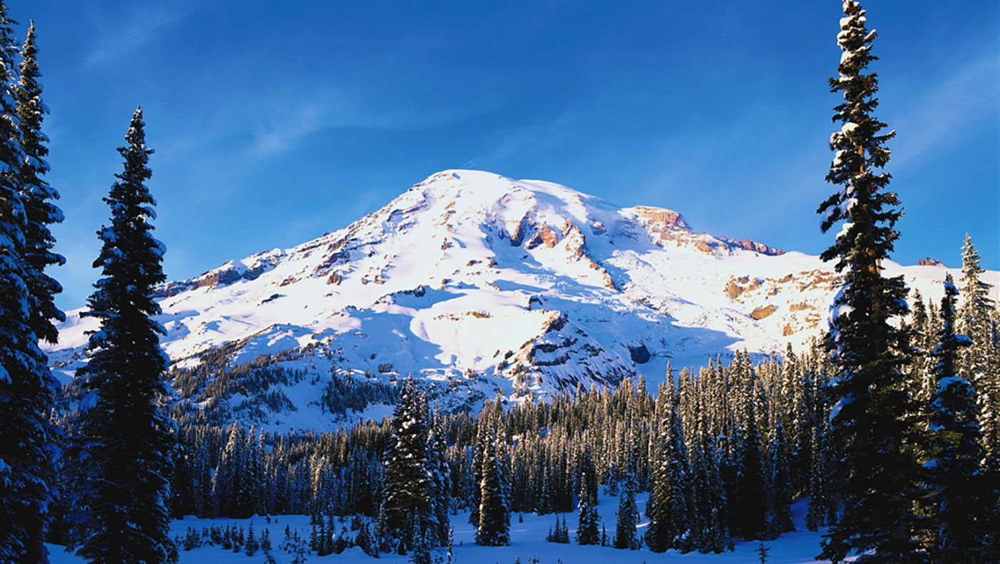
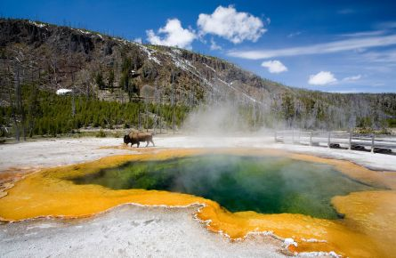
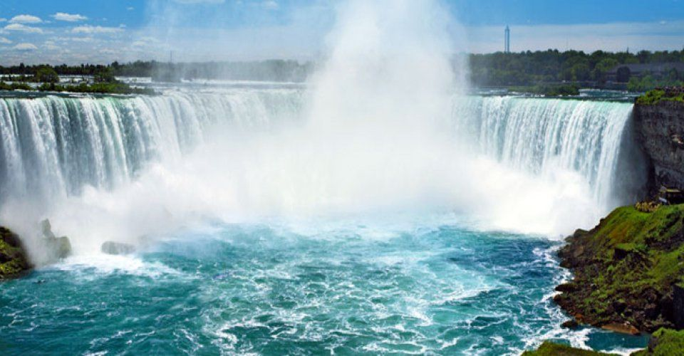
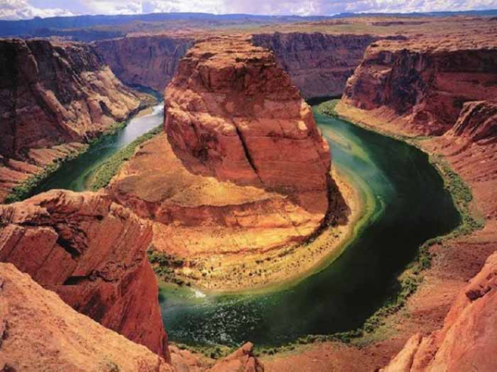
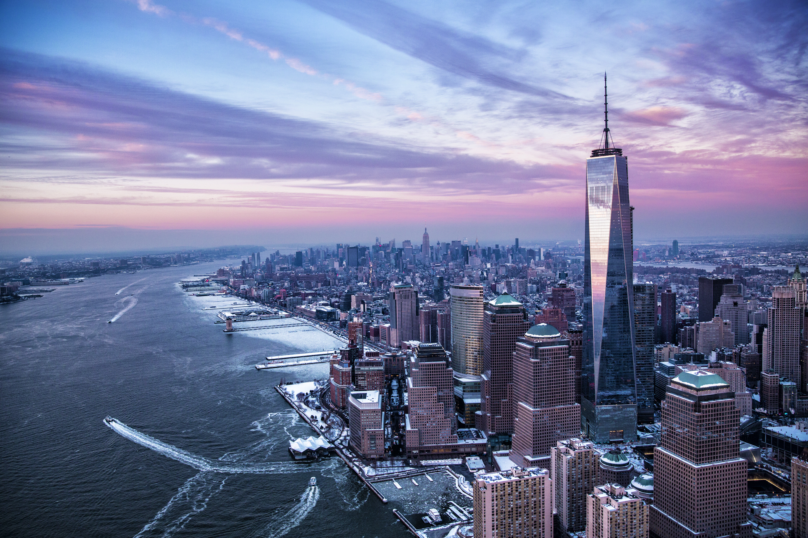

Mount Rainier
We Visited Mount Rainier along with friends and families when we lived in Seattle WA during 2008-2010. It was a wonderful and Awesome experience. It was also my first trip, after we moved to US. I still Cherish those Beautiful memories. If you talk about Seattle WA, there are many places actually we visited and some of them includded are Space Needle, Yakima Valley, Pike Place Market, Museum of Flight, olympic National Park and many more.
Yellow Stone National Park
My first long trip in US. We drove to Yellow Stone from Seattle along with friends. We had lots of Fun during that trip. It's very interesting to know and learn about the pools and steam supervolcano in Yellow stone. Yellow stone includes the nation's oldest herd of bison.
Niagara Falls
This was our Family trip to Niagara Falls along with my Parents. It was so Amazing to see such a huge falls. My favorite part was Horseshoe falls. We even get to see Fireworks, since we visited on 4th July of that year.It was Marvelous movment. We in fact loved this place so much, that we visited couple of times in a row. We had many woderful experiences. we also visited Aquarium of Niagara were we get to see Seal show which was excellent.
Grand Canyon
Grand Canyon was our last year summer trip. We did camping too. It was unbelievable and so immense view.I was thrilled to see such a view. We had enjoyed the trip. We liked the Horseshoe bend the best.Our trip not limited to Grand Canoyn, but also included some other places around Grand Canyon.
New York
Last but not least, another wonderful place ever to visit is New York. My words won't be enough to describe this Amazing place. Times-Square, Madam Tussauds, One World Trade center, Wall Street and so on.